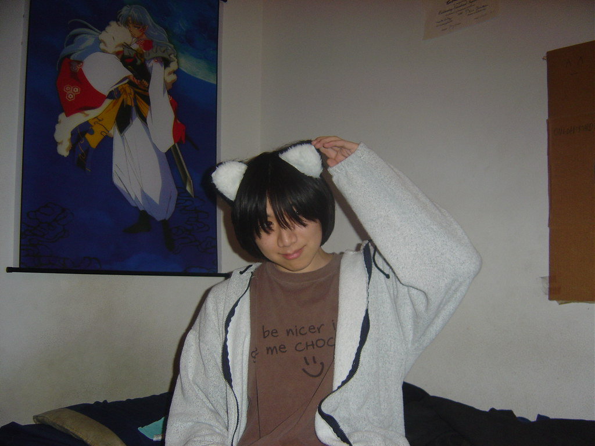

Jo is a guy with cat ears. They are not real cat ears, he is not part cat. (Or is he???) He drinks black coffee, drinks its 3-5 times a day and enjoys going on walks. Jo spends most of his days chilling alone or with the one or two friends he has, reading a book and sitting in a weird position. It's a simple life. For the most part.
